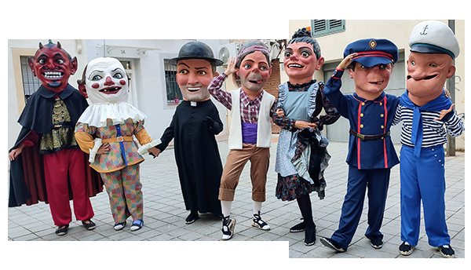
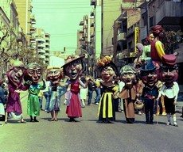
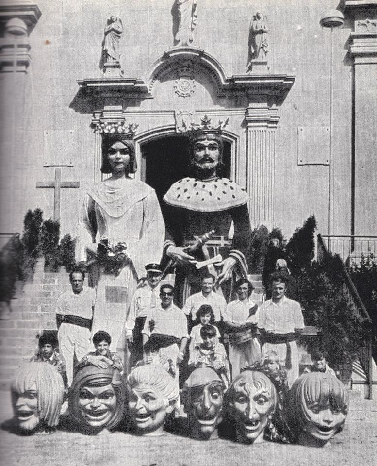
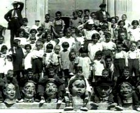

Tres comparses, més d'un segle
Capgrossos que han acompanyat els gegants de Badalona des del segle XIX.
Comparsa vella
1946
Amb l’estrena dels Gegants Reis de 1946, els actuals Jeroni i Badamar, també s’encarregà al taller “El Ingenio” de Barcelona una comparsa de capgrossos per tal que acompanyessin a la nova parella de gegants de la ciutat. Dels capgrossos que portem avui en dia, només el Pallasso i en Popeye foren estrenats aquell any, acompanyats d’altres que actualment es troben desapareguts. Poc temps després, la família de capgrossos es va ampliar amb l’aparició de la Dona i el Capellà. Tots ells van deixar de sortir a causa del seu mal estat quan, durant la segona meitat de la dècada dels 50, els gegants foren canviats de vestit. Llavors s’estrenaren uns nous capgrossos, els quals varen sortir fins que es retirà la parella de gegants.
A la dècada dels anys 1980 es van trobar set capgrossos fent de coixí als gegants vells en molt mal estat. Després de la recuperació dels gegants vells va arribar el moment de la recuperació d'aquesta comparsa de capgrossos. Aquesta tasca, llarga i costosa, va anar a càrrec d'en Jordi Grau de Terrassa els quals va retornar a la seva forma original. D'aquí en van sortir, cap al 1988, el Pallasso, la Dona, el Capellà, el Baturro, el Dimoni, el Policia i el Popeye. Des d'aleshores han sortit, d'una manera o altre, durant les Festes de Maig.

Què ballen?
Des de la seva recuperació tenen com a propi el Ball de Gegants i Capgrossos de Badalona, el qual van heretar de la comparsa del 1982. Dins d'aquest conjunt ballen les peces de: el Ball per Parelles, la Sardana del Catalanet, el Ball del Sàtir i el Corrandillo. L'any 2014 estrenen l'Erromerian un ball amb una música d'origen basc. L'any 2021, després d'un canvi de vestits i restauració, presenten el Ball de Capgrossos de Badalona obra de Lola Ybran i Xavi Lozano.
Comparsa nova
1982
Juntament amb els gegants Ripal i Brunel·la, l’escultor badaloní Jordi Liñán va fer aquesta comparsa de 9 capgrossos: el Sàtir, la Negrita, el Noble, la Senyoreta, la Rínxols, la Vella, el Mosso d’Esquadra, el Catalanet i el Nano. El Ball de Gegants i Capgrossos de Badalona s’estrenà justament amb tots ells.
Abans que es fundés la Colla de Geganters de Badalona, aquests capgrossos eren duts per un grup de teatre, però a partir de 1986 fou l’entitat de cultura tradicional i popular els que se’n feren càrrec, fent-los ballar per arreu on anaven.
Tot i això, la colla els dugué un parell de vegades tan sols, i és que a part del seu pes considerable i les seves dimensions el cap no quedava ben subjectat al ballador i a més la fibra de vidre de la que eren fets causava irritacions. L’any 1988 deixaren de sortir i actualment resten desats al local de la nostra entitat, esperant que puguin ser restaurats per tal que tornin a dansar pels carrers.

Què ballen?
El dia de la presentació d'aquests capgrossos es va presentar el Ball de Gegants i Capgrossos de Badalona, una composició de Jordi Fàbregas i coreografia de Jan Grau. Amb tot i això aquestes figures mai ballarien El Corrandillo a causa de la complexitat inicial de combinar gegants i capgrossos en un mateix ball. Aquesta peça es va estrenar anys més tard però amb els capgrossos vells.
Comparsa valenciana
1971
L'1 de maig de 1971 va arribar a Badalona una parella de gegants acompanyada d'una comparsa de sis capgrossos segurament fets a algun artista valencià. Aquests capgrossos van acompanyar als seus gegants i també van actuar, en alguna ocasió, sols.
Tres tenien trets de persones ja grans: un, amb un ull tapat, com si d'un pirata es tractés; un segon d'una dona ja gran amb el cabell segurament blanc i un tercer una dona gran amb un nas prominent, com si d'una bruixa representés. Els tres restants tenien faccions jovenils amb pentinats de l'època dels anys 1970: un noi (amb barbeta) i dues noies.
D'aquests capgrossos es va perdre la pista fins que l'any 2013 van tornar per sortir a les festes del barri de Lloreda. Sembla ser que l'Associació els va acollir durant molts anys a les seves dependències fins que un grup de joves del barri va decidir arreglar-los i treure'ls a les festes pròpies. Entre 2013 i 2014 van sortir en algunes festes de la ciutat, tot i que des d'aleshores no se'ls ha vist més pel carrer. El 2014, i dins les Festes de Maig, la comparsa valenciana es va retrobar després de molt de temps separats. Cal dir, però, que de les sis figures originals, només en queden quatre.

Comparses històriques
Des del segle XIX
Ja des de finals del segle XIX hi ha constància que a Badalona hi havia capgrossos. De fet, al 1894, quan l’Ajuntament comprà l’Anastasi i na Maria a la Confraria de Sant Anastasi, segons consta al programa de la Festa Major d’aquell any passejaren pels carrers els gegants, l’Àliga i els capgrossos. Així doncs, aquella devia ser la primera comparsa de capgrossos que havia existit a Badalona.
Sembla que durant la segona meitat de la primera dècada del segle XX va augmentar la família capgrossera de Badalona, passant de tenir 6 a 12 capgrossos.
Cap a la dècada dels anys 20, els 6 capgrossos més antics, que ja tenien vora 35 anys, deixaren de sortir i només apareixien pels carrers els nous, els quals duraren fins que van ser substituïts per la nova comparsa, estrenada l’any 1946, juntament amb els gegants Reis.
Mentre pels carrers sortien en Jeroni i na Badamar, també van anar apareixent alguns capgrossos més, a part dels que s’havien estrenat al 1946. De fet, al començament hi havia el capgròs Pallasso, en Popeye, l’Avi, el Moro i el Xinès i, posteriorment, varen aparèixer la Dona, el Capellà, el Dimoni, el Mosso d’Esquadra i el Baturro. Un cop els gegants foren abillats de nou, cap a la segona meitat de la dècada dels 50, s’obtingué una nova comparsa de capgrossos, tot i que quan aquesta parella de gegants deixà de sortir, els caps desaparegueren.
